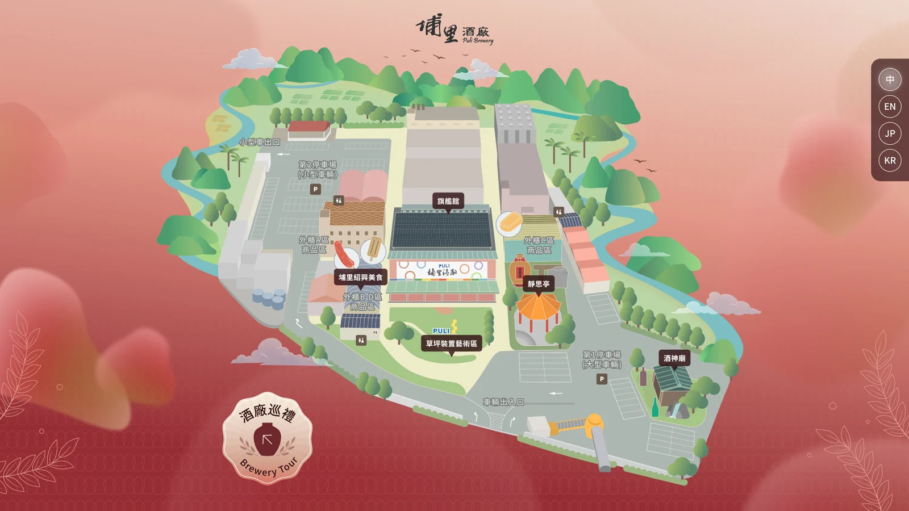
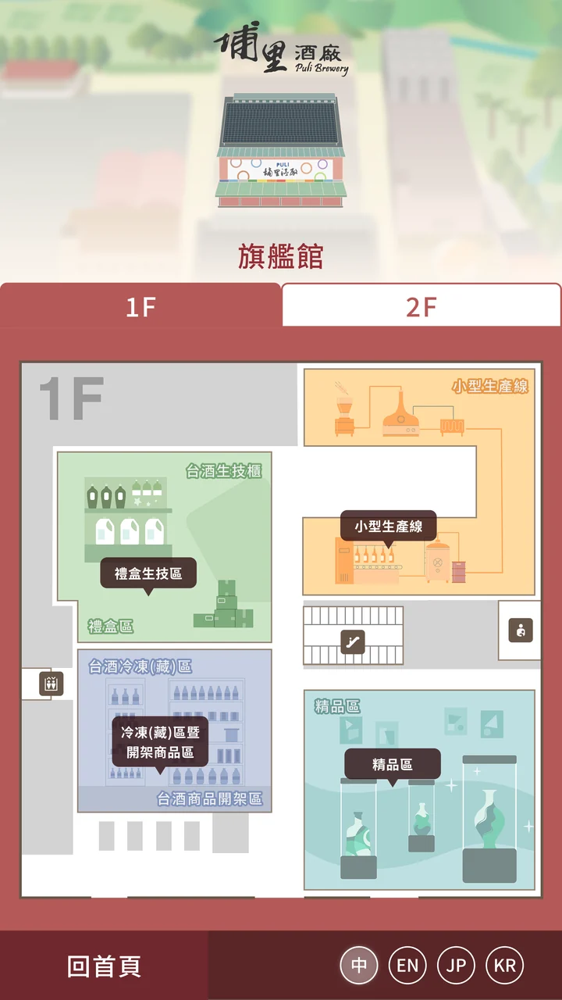
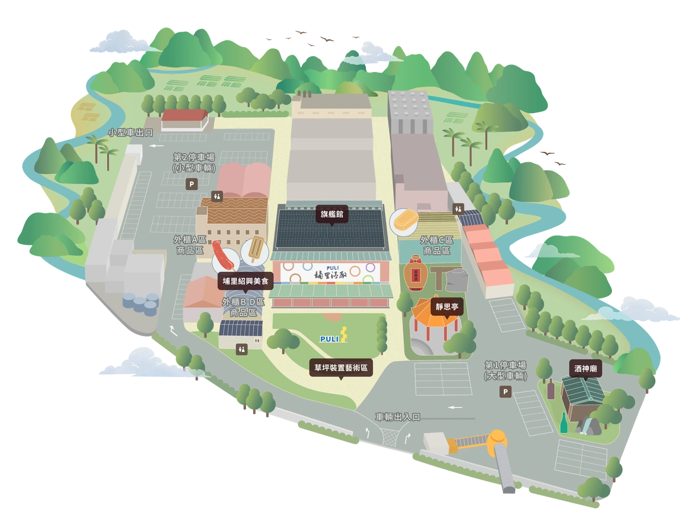
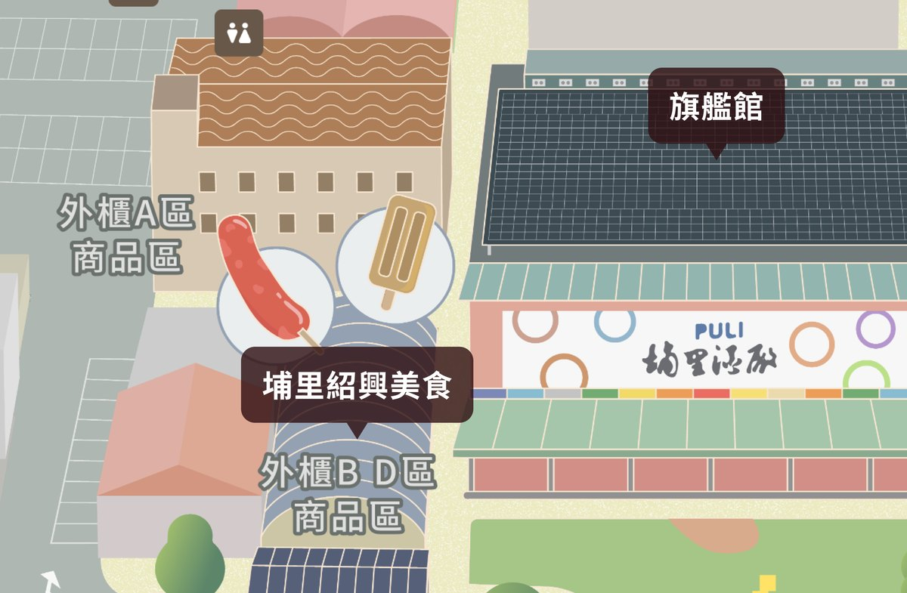
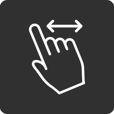
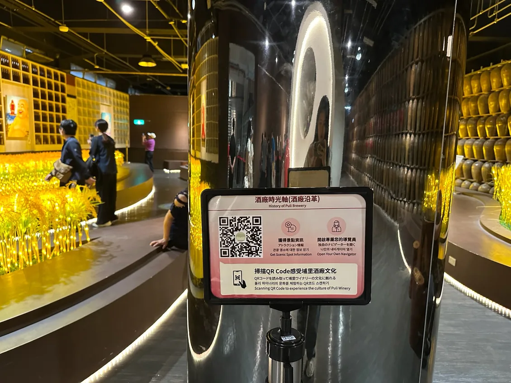
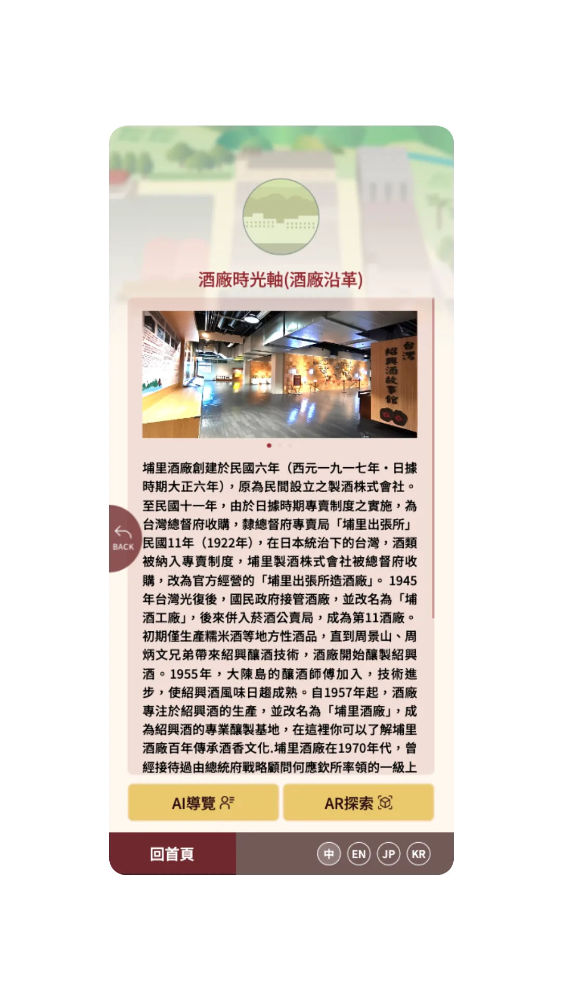
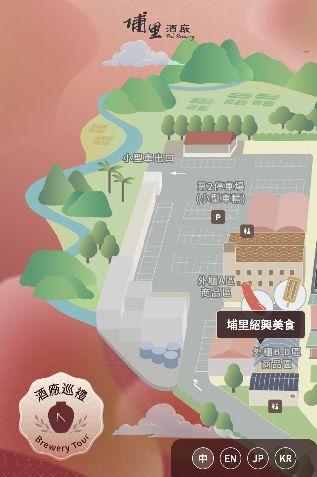
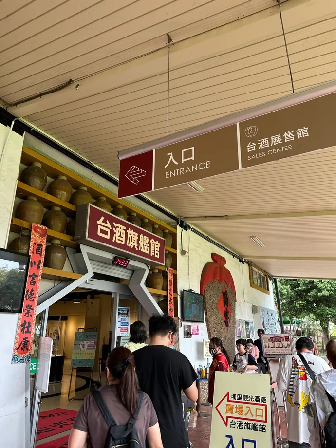

Puli Brewery
Smart Tour System
- UI/UX design
- Cross-device UI
- Illustrated map
A digital visitor guide for Puli Brewery in Taiwan. Visitors can browse locations and floors on a map, or scan an on-site QR code to open a location page. The guide supports Chinese, English, Japanese, and Korean, with layouts adapted for desktop browsers, phones, and a 43-inch kiosk.
Visit live site ↗

What I did
I took part in requirements discussions and the site survey. My work covered information architecture, user flows, wireframes, cross-device UI, and the illustrated map. I also designed the QR-code entry flow, on-site signs, and location pages. For the AI guide, I designed its entry points and their connection to the location content.
I organized shared components and UI guidelines in Figma and worked with the PM and engineers. Once the pages were built, I tested and adjusted them with the team on desktop browsers, phones, and the 43-inch kiosk.
Connecting the map to location pages
Before designing, I visited Puli Brewery to photograph the site and clarify requirements with brewery staff. The homepage is an illustrated map of the grounds: tapping a location label opens its content. For buildings with multiple floors, such as the flagship hall, the interface includes 1F/2F tabs.
The client agreed to the illustrated map style proposed by our team. During the pitch, I explored styles with Stable Diffusion. I drew the final map in Illustrator and Photoshop, following the actual roads, buildings, and locations on site.

Keeping location labels readable on the map
The map is colorful and some buildings sit close together, so labels can cover buildings or run into each other. I chose white text on a semi-transparent dark brown label, balancing readability, the brand look, and how much of the map it hides. When I moved labels, I kept each one pointing to the right building.

Showing that the map can be dragged
Phones and the kiosk show only part of the map at a time. I anticipated that visitors might not realize the map can be dragged, or might think the page had not loaded properly, so I proposed a left–right drag hint. It appears briefly and disappears once the map moves, so it doesn’t keep covering the content.

From on-site signs to location content
Direct access to location pages through QR codes was part of the project requirements. I designed the entry flow, the on-site signs, and the location pages, so that a visitor scanning the code beside a location opens that same location’s content.


Adjusting layouts for reach and viewing distance
The phone and kiosk share interface elements, but the kiosk is not just a scaled-up phone. For the kiosk, I considered how far people stand from a large screen and what visitors of different heights can reach. I moved the language switch from the right side, where it sits on the web version, to the bottom, then checked and adjusted the layout on the device.

Shared components
The phone and kiosk share floor tabs, map markers, buttons, and the language switch. I documented these components in Figma and adapted their layout to each screen’s proportions.


For motion, I gathered ways to implement map effects such as drifting clouds, flocks of birds, and a zoom bounce, and discussed them with engineers. After the PM and engineers reviewed them, the team decided to cut non-essential decoration and put navigation and device performance first.
Leaving room for text in four languages
The tour had to support Chinese, English, Japanese, and Korean. From the start, I planned the location labels around the longer English names. Labels expand to a shared maximum width, with longer names wrapping onto additional lines to limit how much of the map they obscure. I reviewed and refined the layouts throughout the design process and noted these rules in the handoff document. After implementation, I checked the layouts on the target devices and refined them with the team.
Elements such as the language switch and the floating “Brewery Tour” button were also set up in Figma as components and variants for each language.


A four-language guide for desktop, mobile, and kiosk
The PM, the engineering team, and I launched the project within its 90-working-day schedule, covering 13 locations in four languages. I delivered the tour UI, the illustrated map, the entry flow and on-site signs, and the shared Figma components and UI guidelines. After launch, I also used the mobile version on site in Puli.


Reflection
Shared components gave the interfaces a consistent base, but reach and text length still required different layouts. I carried those decisions into the handoff guidelines and checked them with the team on the actual devices.